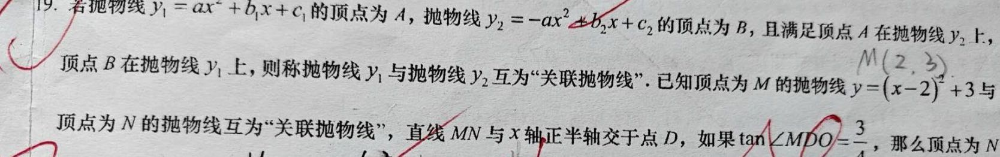
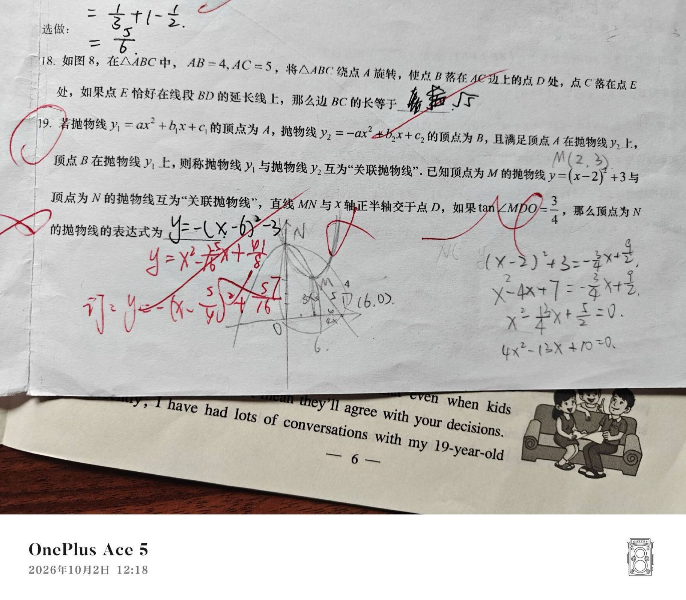

原 原题先自己读一遍，再往下看。题干里的每一句话后面都有用。
19. 若抛物线 y 1 = ax 2 + b 1 x + c 1 的顶点为 A ，抛物线 y 2 = −ax 2 + b 2 x + c 2 的顶点为 B ，且满足顶点 A 在抛物线 y 2 上、顶点 B 在抛物线 y 1 上 ，则称抛物线 y 1 与抛物线 y 2 互为"关联抛物线"。已知顶点为 M 的抛物线 y = (x −2)2 + 3 与顶点为 N 的抛物线互为"关联抛物线"，直线 MN 与 x 轴正半轴交于点 D ，如果 tan∠MDO = 3/4 ，那么顶点为 N 的抛物线的解析式是 ________。
看原卷照片（题干 + 他的草稿 + 红笔批改）
原卷上的第 19 题（题干裁切）

整题照片（含红笔订正与手写草稿）

原件在 RAW/错题照片/，已入库 Git。判读依据是卷面上他自己的手写过程与红笔批改。
题干拆成 6 个已知
题干说的 翻译过来
若抛物线 y₁ 与抛物线 y₂ 互为"关联抛物线" 两个方向都要成立 ：A（y₁ 的顶点）在 y₂ 上，且 B（y₂ 的顶点）在 y₁ 上。只做一个方向不算关联已知顶点为 M 的抛物线 y=(x−2)²+3 这条抛物线是已知的 。配方式直接读出 M(2, 3)，并展开为 y₁=x²−4x+7 与顶点为 N 的抛物线互为"关联抛物线" 这条是要求的 ，记 y₂=−x²+b₂x+c₂（题图给出 a₂=−1，即开口向下）。M 在 y₂ 上、N 在 y₁ 上，两条都要用 直线 MN 与 x 轴正半轴交于点 D D 在正半轴，所以 D 的横坐标 d>0。由 tan∠MDO=3/4 反解出 d，再定直线 MN 的斜率与截距 如果 tan∠MDO = 3/4 ∠MDO 是 M 关于 DO（即 x 轴）的仰角，故 tan = M 的纵坐标 ÷(d−2) = 3/(d−2)，直接解出 d=6 求顶点为 N 的抛物线的解析式 求 y₂ 的一般式。两个条件各给一个方程，加上斜率条件正好定死未知数
最容易漏掉的是第 1 条。 很多人只做到"A 在 y₂ 上"就以为完了——但题目说的是"互为 关联抛物线"，说明反过来也成立 。第 5 条是第二道关 ：tan∠MDO 中的 ∠MDO 是 M 关于 DO（即 x 轴）的仰角，不是任意两线的夹角，角度认错整条斜率链都会崩。
先说结论：你做对了 4 步，错在最后 1 步。
这一页就是带你把那最后一步走通。看完你自己重做一遍，别的都不用管。
1 先别算，先把图看懂这道题文字绕，但图形关系其实一句话就能说清。
「关联」的意思是：互相站在对方身上。 站在 y₂ 上 ；N 是 y₂ 的顶点，但 N 站在 y₁ 上 。都要 成立，缺一个都不叫关联。
关联抛物线的双向条件示意图
y₁ 开口向上顶点在 M(2,3)，y₂ 开口向下顶点在 N，M 落在 y₂ 上、N 落在 y₁ 上，M N D 三点共线，D 在 x 轴正半轴。
0 1 2
3 4 5 6
0 1 2
3 4 5 6 7
x
y
O
直线 MN
N
顶点(1.25, 3.56)
M
顶点(2, 3)
D
(6, 0)
y₁ = (x−2)²+3
y₂ = −(x−1.25)²+3.56
这是正确 的样子。注意 N 在 M 的左上方 ，不在右边
为什么 N 在左上，不在右上？
因为直线 MN 是往右下走 的（M 高、D 低）。M 在 N 的右边，N 就必须在 M 的左边。这是从图上就能看出来的"位置锁定"。
你写的 −(x−6)²−3 把顶点放到了 (6,−3)——那是 D 的正下方 ，整条抛物线掉到 x 轴以下去了。题目里的 y₂ 顶点必须在 y₁ 上，y₁ 全在 x 轴上方，这一条就过不去。
2 你已经做对的部分先把这部分看清楚——这不是安慰，是事实。
你写的 对不对 说明
y₁ 展开成 x²−4x+7 ✓ 配方正确 M(2, 3) ✓ 顶点坐标对 D(6, 0) ✓ tan 用对了 直线 MN：y = −(3/4)x + 9/2 ✓ 斜率、截距都对 方程 4x²−13x+10 = 0 ✓ 完全正确，一步不差 顶点写成 (6, −3) ✗ 拼凑出来的
那个方程是这道题最难的一步，你列对了。 4x²−13x+10=0 和标准答案一模一样 。"想到了没往下走" 。
3 断点到底在哪把两个答案摆一起看。
你写的
y = −(x−6)² − 3
顶点 (6, −3) ← 跑到 x 轴下面去了
正确的
y = −(x−1.25)² + 3.5625
顶点 (1.25, 3.5625) ← 在 y₁ 上 ✓
那个 (6, −3) 是怎么来的？
我给你算清楚：
6 ← D 的横坐标，直接抄过来
−3 ← M 的纵坐标 3，取了相反数
（大概是觉得"y₂ 开口向下，所以纵坐标要是负的"）
6 和 −3 凑一块儿 → (6, −3)
问题就出在这： 你把顶点的横坐标和纵坐标，当成了两个可以随便拿的独立数字 。
但抛物线的顶点是一个点 ，它的横坐标和纵坐标被同一个参数绑在一起 ——b 一变，横纵一起变。你不能一个从 D 那儿拿，一个从 M 那儿拿。
一句话总结你的坑： 只是横坐标 ，纵坐标还得回方程里再算一次——这"再算一次"就是你漏掉的动作。
4 五步法（一步一个动作）点开每一步，先自己想，再看。不要一次全展开。
"关联"不是图形，是两条数学条件 。新定义题第一件事永远是把它写成式子：
条件① M 站在 y₂ 上 → 把 M 的坐标代进 y₂
条件② N 站在 y₁ 上 → 把 N 的坐标代进 y₁
两条缺一不可。少一条就解出退化的假答案 （下面第 3 步会碰到）。
小试：你觉得"互为关联"这个说法，强调的是一个 方向还是两个 方向？
不用写过程，选一个就行
检查
y₂ 的顶点在 M，说明 M 这个点在 y₂ 的图像上：
2b + c₂ = 7
这就把 c₂ 绑在 b 上了。y₂ 写成顶点式，顶点横坐标是 b/2 ：
y₂ = −(x − b/2)² + b²/4 + c₂
顶点 N = ( b/2, b²/4 + c₂ )
所以整个题只剩一个未知数 b 。关键：b/2 是 N 的横坐标 ——记住这句，第 4 步全靠它。
把 N 的坐标代进 y₁（条件②）：
4x² − 13x + 10 = 0 ← 这就是你写的那个方程
Δ = 13² − 4×4×10 = 169 − 160 = 9
√Δ = 3
x₁ = (13 + 3)/8 = 2
x₂ = (13 − 3)/8 = 5/4
为什么 x₁ = 2 要舍掉？ 和 M 一模一样 。两个顶点重合了，y₂ 就退化成 y₁ 自己——同一个抛物线跟自己"互为关联"没有意义。默认两个顶点不重合 。
这一步是这类题的固定扣分点。 算出一个解就急着写答案，很容易把这个"假解"也写上去。养成习惯：方程解完，先代回去看一眼合不合理。
★ 这就是你漏掉的动作。慢慢看。
解出来的 x₂ = 5/4 是 N 的横坐标 。而上一步说过，N 的横坐标 = b/2 。所以：
5/4 = b/2 → b = 5/2
再回条件①： 2×(5/2) + c₂ = 7 → c₂ = 2
顶点式写回：
y₂ = −(x − 5/4)² + 57/16
一般式：
y₂ = −x² + (5/2)x + 2
为什么纵坐标要"再算一次"
因为 5/4 是 x，不是 y 。你不能因为解出了 5/4，就认为顶点的纵坐标也是 5/4。
纵坐标只有一条路能拿到：代回 y₂ 算 。
−(5/4 − 5/4)² + 57/16 = 0 + 57/16 = 57/16 ✓
也可以用 y₁ 算：(5/4−2)²+3 = (−3/4)²+3 = 9/16+3 = 57/16 ✓ 两条路结果一样，说明没算错。
把这一步记成一句话： 横 坐标 → 顶点的 y 回方程里再算 → 写成顶点式。
两个条件各验一次，心里才踏实：
验条件① M 在 y₂ 上：
y₂(2) = −(2 − 5/4)² + 57/16
= −(3/4)² + 57/16
= −9/16 + 57/16 = 48/16 = 3 = M 的纵坐标 ✓
验条件② N 在 y₁ 上：
y₁(5/4) = (5/4 − 2)² + 3
= (−3/4)² + 3
= 9/16 + 48/16 = 57/16 = N 的纵坐标 ✓
最终答案
y₂ = −x² + (5/2)x + 2 = −(x − 5/4)² + 57/16
答案用一般式还是顶点式写都行，但务必把 y₂ 前面写上，别只写一个表达式。
5 这个坑长什么样下次遇到"解方程求顶点"，提醒自己这一句。
横纵坐标不是独立的，是被同一个参数绑着的。
设 y = ax²+bx+c，顶点横坐标是 −b/2a，纵坐标是 (4ac−b²)/4a。两个里面都有 b。
b 一动，两个一起动。
你可能的做法 问题
横坐标从 D 抄一个，纵坐标从 M 抄一个 两个数不配套，不是任何抛物线的顶点 解出 x 就直接当顶点写 x 只是横坐标，纵坐标缺失 解出 x，代回 y₂ 算出 y，再写顶点式 ✓ 正确路径
顺手记一个秒验技巧： 如果 y₂ 的顶点在 y₁ 上，那 y₂ 的顶点纵坐标一定 ≥ 0 （因为 y₁=(x−2)²+3 最低点是 3）。写出负的顶点纵坐标，不用往下算就知道错了。 这一眼能省你两分钟。
6 三道检验题先自己做，答案折叠着。 做不出来再展开。改一个数值 → 换考点 → 已知与所求对调 。第三题不能省。
第 1 题（原题变式）
y₁ 和 y₂ 的关联关系不变，y₁ 还是 (x−2)²+3，M、N、D 仍共线，D 仍在 x 轴正半轴，但把条件改成：
tan∠MDO = 1/2
求 y₂ 的解析式。
做完了，看思路
① 定 D： 3/(d−2) = 1/2 → d = 8, D(8,0)
② 定直线：k = (3−0)/(2−8) = −1/2
y = −(1/2)x + 4
③ 联立： x²−4x+7 = −(1/2)x+4
2x² − 7x + 6 = 0
④ 求解： Δ = 49−48 = 1
x = 2 或 x = 3/2
⑤ 舍根： x=2 → N 落在 (2,3) = M，退化，舍
x=3/2 保留
⑥ 翻译： b/2 = 3/2 → b = 3
2b+c₂=7 → c₂ = 1
⑦ 写回： y₂ = −(x − 3/2)² + 13/4
= −x² + 3x + 1
关键一步是 ⑥ ——和原题一模一样的动作。这就是这套题的全部套路。
第 2 题（换个考点，同一手法）
已知顶点 P 的抛物线 y = (x−3)² + 5，与抛物线 y = −x² + 4x + c 互为关联，求 c 的值。
做完了，看思路
① P 是 y 的顶点 → P(3, 5)
② P 在 y = −x²+4x+c 上（条件①）：
−9 + 12 + c = 5
c = 2
③ 双向检验：抛物线 y=−x²+4x+2 的顶点是 (2, 6)
代入 y = (x−3)²+5： (2−3)²+5 = 1+5 = 6 ✓ 成立
④ 所以互为关联，c = 2
这题 c 很好算，但第 ③ 步的验证不能省 ——只有 c=2 才能同时满足两个方向。顺手验一遍更稳。
第 3 题（问答对调 · 这题才是真正的考试题）
这次反过来问。已知 y₁ 的解析式是 y = (x−2)² + 3，并且它就是 某条抛物线 y = −x² + bx + c 的关联抛物线，求 b 的值 。
做完了，看思路
① 关联是双向的，两条都验：
y₁ 的顶点 M(2,3)
条件① M 在 y = −x²+bx+c 上：
−4 + 2b + c = 3 → 2b + c = 7
条件② y = −x²+bx+c 的顶点 N 在 y₁ 上：
顶点横坐标 = b/2
顶点纵坐标 = b²/4 + c
所以 (b/2 − 2)² + 3 = b²/4 + c
b²/4 − 2b + 4 + 3 = b²/4 + c
c = 7 − 2b
② 代回条件①： 2b + (7 − 2b) = 7 → 恒成立！
③ 所以 b 无法唯一确定
这道题的陷阱：b 不唯一。 条件不够 ——只给一条抛物线，无法定出另一条。但别急着走。 原题之所以能定下来，靠的是第三个条件：D 在 x 轴正半轴，且 tan∠MDO = 3/4 。
所以这题真正在问什么？ ——问的是能不能看出"还缺一个条件" 。
中考里这类"条件不足"的坑很常见：选项里一定有一个"无法确定 / 条件不足"。看出缺条件，本身就是得分点。
三题串起来看，这套题就一个动作： 主动做双向验证 ；看出条件不足 。三道题考的是同一个能力：把"互为关联"翻译成两个方程，并检查解够不够定未知数。
7 说给我听（别跳过）这两题答得出来，说明你是真懂了，不只是看懂。
1. 解出来的 x 到底是"什么"的坐标？为什么不能直接拿来当顶点的横纵坐标？
用自己的话写，写不出来就回去看第 4 步
对照一下
2. x₁ = 2 这组解为什么必须舍掉？
提示：想想"互为关联"对两个顶点有什么要求
对照一下
想 迁移想五题前面四步都是给你搭脚手架 。现在把脚手架撤了——这几题没有提示，检验的是方法本身 。
第 1 题 为什么 y₂ 的顶点纵坐标一定 ≥ 0 ？
提示：y₂ 的顶点在 y₁ 上，而 y₁ = (x−2)²+3
对照一下
第 2 题 解出 x₁ = 2 这组"假解"的时候，你在写答案之前 用什么动作能一秒发现它是假的？
想想第 4 节第 3 步那段红字
对照一下
第 3 题 如果题目改成"直线 MN 与 x 轴负 半轴交于 D"，整个解法哪一步会最先出问题 ？
先别算。想清楚 D 跑到负半轴后，tan∠MDO 会变成什么
对照一下
第 4 题 如果 y₂ 的开口朝上 （a₂ = +1），这套解法还成立吗？
重点想：第 2 节那个"顶点在 M 上 → 2b+c₂=7"的式子，顶点式还写不写得出来
对照一下
第 5 题 ★ 什么情况下这个方法会失效？
这题练的是方法的适用边界 。想清楚"互为关联"这个定义在什么时候不给数值 。
对照一下
第 5 题的完整答案（做完再看）： "两个条件 + 一个斜率条件"刚好定一个未知数 上。以下三种情况会失效：① 条件不足 ——只给一条抛物线，另一条完全自由（第 6 节第 3 题就是这种，b 无法确定）。② 两抛物线顶点重合 ——退化情形，x=2 那组解必须舍。③ 定义退化成对称情形 ——如果 y₁ 和 y₂ 恰好是同一条抛物线，"互为"就变成了"自己关联自己"，题目失去意义（所以要验两条方向）。一句话：先数未知数个数，再数有效条件个数。个数不够 → 主动写"条件不足"，不要硬凑答案。
家长 今晚 20 分钟怎么用这一页是给孩子自用的。下面是给你看的。
时间 做什么 注意什么
8 分钟 让他关掉这一页 ，重做原题 重点盯：解出 4x²−13x+10=0 之后，他写什么 7 分钟 做检验题第 1 题（改 tan 值那题） 卡住就回来看第 4 步，别直接给答案 6 分钟 做检验题第 3 题 （问答对调） 这题他很可能硬算。看他能不能说出"条件不足" 5 分钟 让他讲第 8 节第 5 题（方法何时失效） 说不出来 = 只是"看懂"，不是"会用"
别做的事： 别让他抄这一页的完整解答。这题的全部价值在第 4 步那个思维转换，抄一遍等于没做。可以做的： 他讲对了就明确说"这一步你讲对了"。这题的成就感来源不是满分，是他第一次自己想通"解出来的只是横坐标"。
关于诊断： 这一题原先判为"概念不清"，复核手写后改为"方法没想到" ——因为那个方程他列对了，概念是通的，缺的是方法。概念不清要回去读概念，方法没想到只需练一个固定动作。 练法完全不同，别搞错方向。
进度会存在这台设备上 · 做完记得点上面的"重置"清空